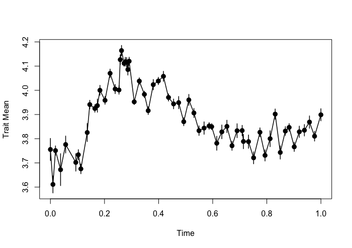
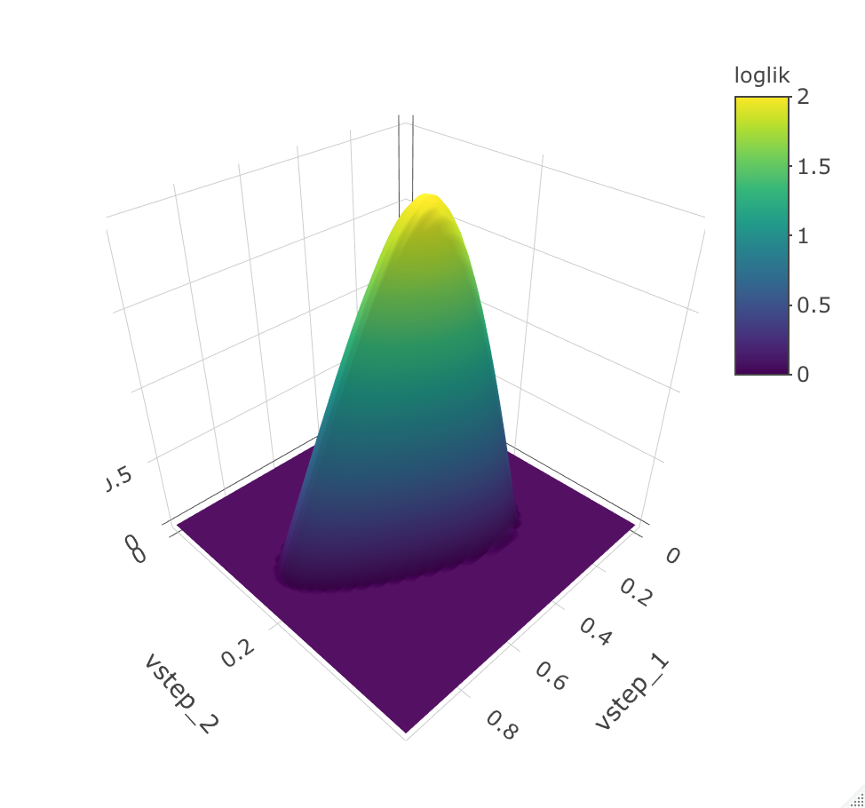
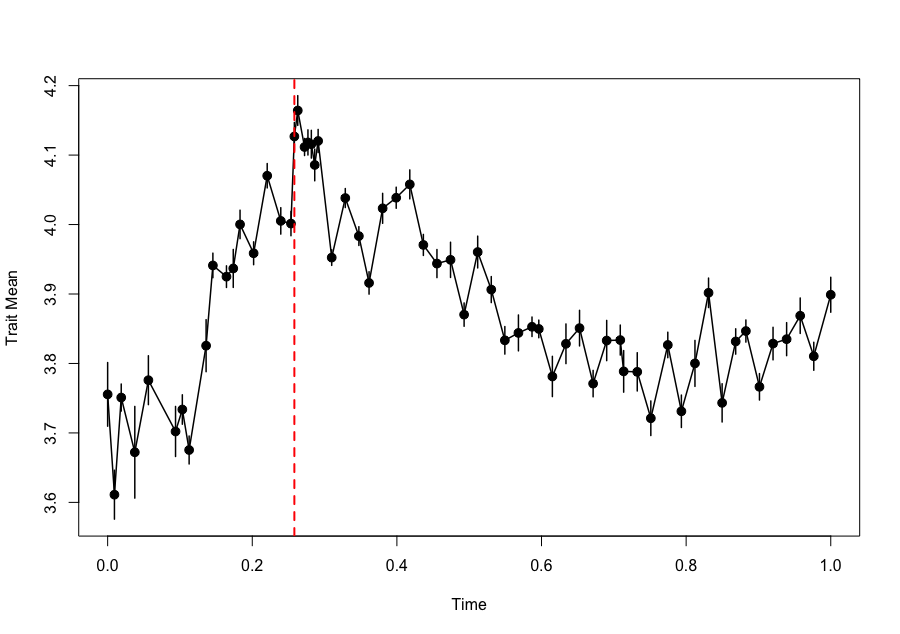
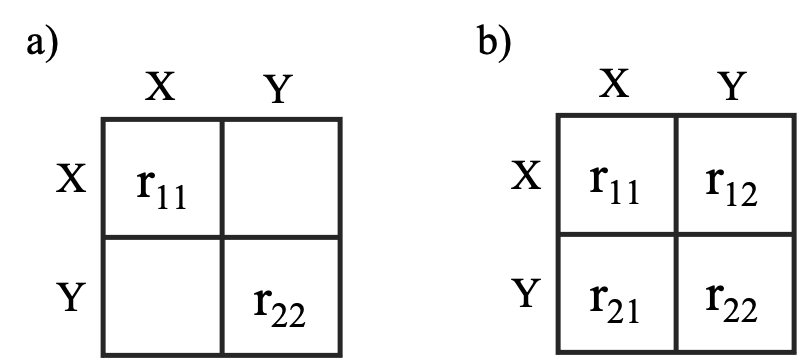
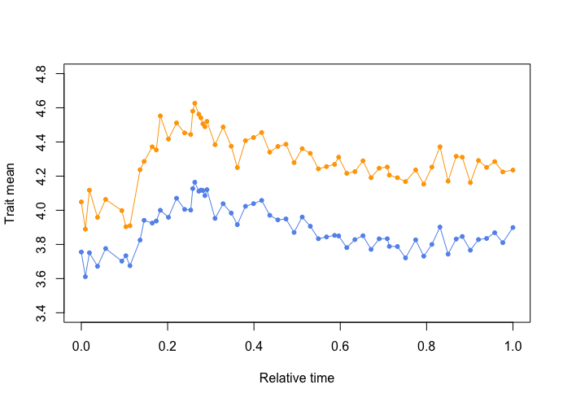
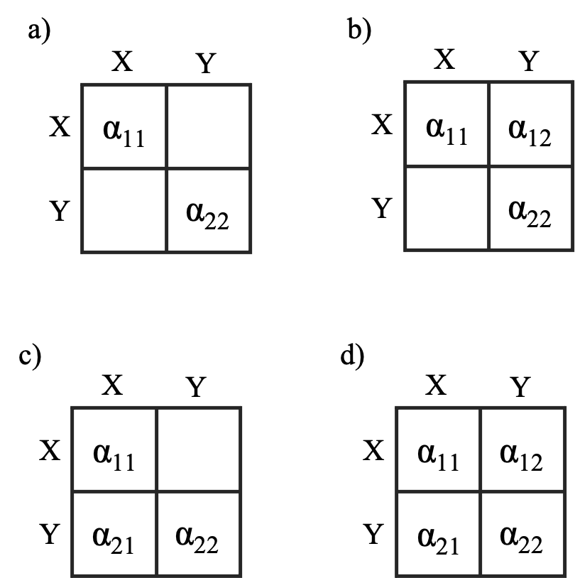

evoTS: analysis of evolutionary sequences of phenotypic change
Kjetil L. Voje
2022-02-17
evoTS_vignette.Rmd1.0 About evoTS
The evoTS package facilitates univariate and
multivariate analysis of evolutionary sequences of phenotypic change.
The goal of the evoTS package is to offer a large range of
evolutionary models to enable detailed studies of evolutionary change
within lineages, in both the fossil record and in modern lineages.
The evoTS package extends the univariate modeling
framework implemented in the
paleoTS
package (Hunt 2006; 2008a; 2008b; Hunt et al. 2008; 2010;
2015) by containing functions to fit a large range of univariate
evolutionary models not implemented in paleoTS.
evoTS has been developed to mirror the user experience from
paleoTS as much as possible. For example, all univariate
models implemented in evoTS can be fitted to a
paleoTS object, i.e. the data format used in
paleoTS. The fit of all univariate models available in
paleoTS and evoTS are directly comparable.
evoTS contains a range of multivariate models, including
different versions of multivariate unbiased random walks and
Ornstein-Uhlenbeck processes. Together, these models allow the user to
test various hypotheses of trait evolution, e.g. whether traits change
in a correlated or uncorrelated manner, whether one trait/variable
affects the optimum of a second trait (Granger causality), whether
adaptation in different traits happen independently toward fixed optima
etc.
evoTS also contains functions for calculating the
topology of the likelihood surfaces of fitted models, a useful feature
to investigate the range of parameter values with approximately equal
likelihood as the best parameter estimates.
1.1 Compatibility with paleoTS (technical
info)
As in the paleoTS package, all models implemented in
evoTS assume that the population (sample) means in the
sequence of ancestor-descendants have a joint distribution that is
multivariate normal with an expected mean vector and covariance matrix
that are functions of the parameters of each model, the time intervals
separating the populations (samples) in the sequence, and the sampling
variances of the trait means calculated for each population (sample).
Given the assumption of multivariate normality, the expected
distribution of sample means is given by their first, second, and mixed
moments (covariance). As in the paleoTS package,
evoTS use the built-in optimization routines in R for
estimating maximum likelihood parameter estimates. The default
hill-climbing optimization technique used in all univariate models in
evoTS (L-BFGS-B) is a quasi-Newton method that constrains
the optimization of certain parameters (e.g. so that variance parameters
cannot be smaller than 0). All multivariate models use the Nelder-Mead
hill climbing search algorithm as default.
All models in evoTS have been implemented using the
joint parameterization routine from the paleoTS package.
The optimization is therefore fit using the actual sample values, with
the autocorrelation among samples accounted for in the log-likelihood
function. The joint distribution of sample means is multivariate normal,
with means and variance-covariances determined by evolutionary
parameters and sampling errors.
As in the paleoTS package, relative model fit in
evoTS are evaluated based on the small sample-corrected
version of the AICc (Akaike 1974; Burnham and Anderson 2002).
2.0 Installation
The evoTS package is available on GitHub and can be
installed using devtools:
> install.packages("devtools")
> devtools::install_github("klvoje/evoTS")
The package will soon be available on CRAN.
3.0 Getting data into evoTS
An object of class paleoTS is the required input for
most of the functions in evoTS. To create a
paleoTS object, you need vectors of trait means,
sample/population variances, sample sizes and ages of the
samples/populations.
One easy way to create a paleoTS object is to use the
as.paleoTS function from the paleoTS package.
## Creating example data
> trait_means<-rnorm(20)
> trait_variance<-rep(0.5,20)
> sample_size<-rep(30,20)
> time_vector<-seq(0,19,1)
# Create paleoTS object
> indata.evoTS<-paleoTS::as.paleoTS(mm = trait_means, vv = trait_variance, nn = sample_size, tt = time_vector)
Another way to get data into evoTS is to use the
function read.paleoTS from the paleoTS
package. This function imports data from a text file with four columns
corresponding to trait means, sample/population variances, sample sizes
and ages of the samples/populations, and converts the input to a
paleoTS object.
See also the paleoTS (vignette)
for more info on how to import data and create a paleoTS
object.
3.1 Data included in evoTS
Two evolutionary sequences (time-series) of phenotypic change are
included in the evoTS package. The data are from the diatom
lineage Stephanodiscus yellowstonensis and were originally
published in Theriot et al. (2006). Each trait consists of 63
samples spanning almost 14 000 years of phenotypic change.
We will use these data to illustrate many of the functions
implemented in evoTS.
We first investigate phenotypic change in the diameter of S.
yellowstonensis. The diameter has been measured in micrometers, but
we are interested in investigating proportional changes in the trait. We
therefore first do an approximate log-transformation of the data. We
then convert the time vector in the data set to unit length (i.e. the
length in time from the oldest to youngest sample/population in the data
set becomes 1). Such a linear transformation of the time vector does not
change how the estimated parameters describe the evolutionary dynamics
in the data, but ease parameter estimation and interpretation of certain
model parameters. We also plot the data to have a look at the phenotypic
changes.
## Doing an approximate log-transformation of the data
> ln.diameter<-paleoTS::ln.paleoTS(diameter_S.yellowstonensis)
## Convert the time vector to unit length
> ln.diameter$tt<-ln.diameter$tt/(max(ln.diameter$tt))
## Plotting the data
> plotpaleoTS(ln.diameter)

4.0 Univariate models in evoTS
The evoTS package contains a range of univariate models
that supplement the models available in paleoTS.
The paleoTS package contains functions to fit biased
(GRW) and unbiased random walks (URW), stasis (modeled as a white noise
process, i.e. uncorrelated variation around a constant mean), strict
stasis (no real evolutionary change) and an Ornstein-Uhlenbeck (OU)
processes assuming a fixed optimum (see Hunt 2006 and Hunt et
al. 2008 for info on these models). The paleoTS
package also contains models of a punctuated mode of evolution where
punctuations (jumps in phenotype space) separate different
parameterizations of the stasis model (Hunt 2008). The
paleoTS package also contains a few other mode shift
models, i.e. where the model of evolution shifts at some point during
the evolutionary sequence (Hunt 2008; Hunt et al. 2015).
Several new univariate models have been implemented in the
evoTS package. Functions are also available to fit mode
shifts between all univariate models available in evoTS and
paleoTS combined. There are also functions available in
evoTS that allow for more than one mode shift during the
analyzed evolutionary sequence.
The following univariate models have been implemented in the
evoTS package:
A decerelated-evolution model (an unbiased random walk with an exponential decrease in the rate of change over time)
A accelerated-evolution model (an unbiased random walk with an exponential increase in the rate of change over time)
The Bokma model (a punctuated equilibrium model where two (or three) unbiased random walks are separated by one (or two) jump(s)/punctuation(s) in morphospace)
Ornstein-Uhlenbeck processes where the optimum changes according to an unbiased random walk.
4.1 Decelerated-evolution model
The decelerated model of phyletic evolution is an unbiased random
walk where the step variance (i.e. the variance of the normal
distribution from which evolutionary steps are drawn) is reduced
exponentially through time (Voje 2020). This model is closely related to
the early burst model developed for phylogenetic comparative data
(e.g. Harmon et al. 2010, Cooper and Purvis 2010), and
describes a lineage that shows a reduced rate of evolution with time. As
for the random walk model (Hunt 2006), the expected evolutionary
divergence between ancestor and descendant populations is always zero in
the model of decelerated evolution. The expected trait mean and its
variance and covariance are given by the following expressions:
\[ E[z_{i}] = z_{0} \]
\[ Var[z_{i}] = \sigma ^{2}
_{step.0}e^{rt_i} + \epsilon _{i} \]
\[ Cov[z_{i},z_{j}] = \sigma ^{2}
_{step.0}e^{rt_{min}} \]
where \(z_{i}\) is the expected trait value for population i in the time series, \(z_{i}\) is the ancestral trait mean, \(\sigma ^{2} _{step.0}\) is the initial value for the step distribution, \(r\) describes the exponential decay in the \(\sigma ^{2}_{step.0}\) through time and is constrained to be 0 or smaller, \(t_{i}\) is the time interval from the ancestral population mean (the start of the fossil sequence, which has a time of 0) to the ith population, and \(t_{min}\) is the time interval from the ancestral population to the oldest of the two populations \(z_{i}\) and \(z_{j}\).
The decerelated model of evolution can be fitted to data using the
opt.joint.decel function.
> opt.joint.decel(ln.diameter)
$logL
[1] 76.77642
$AICc
[1] -147.1461
$parameters
anc vstep r
3.8868739 0.2892461 -1.8076302
$modelName
[1] "Decel"
$method
[1] "Joint"
$K
[1] 3
$n
[1] 63
attr(,"class")
[1] "paleoTSfit"
The output returns the log-likelihood of the model parameter
(logl), the AICc score (AICc), the number (K)
of estimated parameters (parameters), the length of the
analysed time-series (n), the model name (modelName)
and the method used to parameterize the model (method). All
anc is the estimated ancestral trait value, vstep is
the initial value for the step distribution, and r describes
the exponential decay in the vstep parameter through time.
The time it takes to half the rate of evolution can be calculated based on the value of r using \(-ln(2)/r\). The half-life parameter is interpreted based on the time-scale used when analyzing the data. Since time from start to end in our data has been scaled to unit length, the estimated half-life represent the percent of the total length of the time-series it takes for the rate of evolution to half. The half-life is 0.38 in this example. The total length of the analyzed time-series is 13,728 years, which means it takes 5,217 years for the rate of evolution to be halved.
What are the uncertainty of the estimated parameters in this model?
One way to assess that is to set the hess argument to
TRUE when running the model
(opt.joint.decel(ln.diameter, hess = TRUE)). The Hessian
matrix is a square matrix of partial second order derivative and it is
possible to estimate the standard error of the model parameters by
taking the square-root of the inverse of the matrix diagonal. Another
way to assess the uncertainty of the estimated parameters is to explore
the likelihood-surface of the fitted model, which is a possibility in
evoTS.
Investigating the likelihood surface can be helpful for several reasons.
Computing the likelihood surface is a great way to explore which parameter combinations that have an almost identical likelihood compared to the maximum likelihood values. Investigating the log-likelihood surface is also an approach to assess uncertainty in the estimated parameters. A large range of parameter values that have almost the same log-likelihood is an indication that we should be careful when interpreting the maximum-likelihood (best) estimates of the parameters. The functions in
evoTScalculating log-likelihood surfaces report the upper and lower parameter estimates that are within two support units of the best estimate as a way to assess uncertainty in parameters (Edwards 1992). While standard errors computed from the Hessian matrix are always symmetric around the point estimate, the log-likelihood surface might not be (multivariate) normal. The reported upper and lower parameter estimates are therefore often not symmetrical around the maximum likelihood parameter estimates.Estimating parameters in a model using maximum likelihood always run the risk of returning parameters from a local and not a global optimum. Investigating the support surface for combinations of parameters is one way to explore the topology of the likelihood-surface.
Ridges in the log-likelihood surface can make it challenging to identify maximum likelihood estimates of the model parameters in certain cases. Flat ridges may for example cause identifiability issues and problems for the model to converge. Investigating the log-likelihood surface can therefore help diagnose challenges related to failures of models convergence.
The evoTS package contain functions to create likelihood
surfaces for univariate models in evoTS and
paleoTS (e.g. confidence.stasis,
confidence.URW, confidence.GRW,
confidence.OU). These functions need a paleoTS
object and a set of candidate values for the parameters to be evaluated.
One way to define the candidate values is to use the seq
function. The vectors given to the arguments vstep.vec and
r.vec defines the pairwise combinations of parameters for
which the function will estimate the log-likelihood. The resolution of
the input vectors therefore determines how accurate the visual
representation of the support surface is, including the returned upper
and lower estimates printed in the console. A higher resolution gives
better precision, but demands more computation time. Note that the
computed support surface is conditional on the best estimates of the
other model parameters that are not part of the support surface
(e.g. the estimated ancestral trait value is assumed to be 3.8868739 in
the example below).
> loglik.surface.decel(ln.diameter, vstep.vec = seq(0,1.2,0.01), r.vec = seq(-5,0,0.01))
lower upper
vstep 0.17 1.00
r -3.70 -0.28
From the likelihood surface and from the printed confidence
intervals, we see that r values between -3.70 and -0.28 are
within 2 log-likelihood units from the best estimate for this parameter.
This suggests it is hard to exclude the possibility that the half-life
of the decay in the rate of evolution is as much as 248% (34,045 years)
or as low as 19% (2,608 years) of the time-interval investigated.
4.2 Accelerated-evolution model
The accelerated evolution model is identical to the decelerated model except that the r parameter is constrained to be 0 or larger, which means the rate of evolution is accelerating with time.
The accelerated evolution model can be fitted using the
opt.joint.accel function.
> opt.joint.accel(ln.diameter)
$logL
[1] 73.80287
$AICc
[1] -141.199
$parameters
anc vstep r
3.7078973 0.7903365 0.2630122
$modelName
[1] "Accel"
$method
[1] "Joint"
$K
[1] 3
$n
[1] 63
attr(,"class")
[1] "paleoTSfit"
The accelerated evolution model has a lower (worse)
log-likelihood and higher (worse) AICc score compared to the decelerated
model of evolution.
A support surface can be produced using the
confidence.accel function.
> loglik.surface.accel(ln.diameter, vstep = seq(0,5,0.01), r.vec = seq(0,1.5, 0.005))
lower upper
vstep 0.090 5.00
r 0.035 1.35
The 3D plot can be rotated vertically and horizontally to get a
better overview of the likelihood surface, which is why the observation
angle is different for this 3D plot compared to the 3D plot for the
decelerated model.
4.3 The Bokma model
The paleoTS package contains models that portray a
punctuated mode of evolution as a white noise process (stasis)
punctuated by jumps in phenotype space (the function
opt.joint.punc). Bokma (2002) suggested a different model
as a punctuated mode of evolution along branches on a phylogeny (see
also Ingram 2011 and Hunt 2013). According to Bokma’s (2002) model, a
trait is evolving as a unbiased random walk in between punctuation. This
model is implemented in the evoTS package and can be ran
using the function fit.Bokma. The function investigates and
compares all possible locations for the punctuation and returns the
shift point and the maximum likelihood parameter values for the two
unbiased random walks. The minimum length of the time-series (i.e. the
number of samples/populations) that is used to parameterize each
unbiased random walk is defined by the argument minb. The
user can also define which sample/population in the time series that
represents the punctuation event using the argument
shift.point (e.g. shift.point = 20). Fitting
Bokma’s model with two punctuations and three unbiased random walks can
be done using the function fit.2.Bokma.
> Bokma.PE<-fit.Bokma(ln.diameter, minb=10)
> Bokma.PE
[1] "Searching for all possible switchpoints in time series"
Total # hypotheses: 44
1 2 3 4 5 6 7 8 9 10 11 12 13 14 15 16 17 18 19 20 21 22 23 24 25 26 27 28 29 30 31 32 33 34 35 36 37 38 39 40 41 42 43 44
$logL
[1] 83.38311
$AICc
[1] -155.7136
$parameters
anc vstep_1 new.opt vstep_2 shift1
3.7157502 0.3419322 4.1349082 0.1668632 18.0000000
$modelName
[1] "PE.Bokma"
$method
[1] "Joint"
$K
[1] 5
$n
[1] 63
$all.logl
[1] 80.31088 79.51765 80.01722 79.66074 80.48083 79.89100 79.42840 83.38311 80.77101 80.77826 79.85728 79.68613 79.59643
[14] 79.44200 82.63356 81.44387 81.21899 81.02157 82.02478 80.99060 80.56377 81.29680 80.52947 80.10540 80.41855 80.58089
[27] 80.27750 80.49915 79.77512 79.54571 79.07448 79.59706 79.30831 79.04140 79.46599 79.23228 78.96974 78.89496 78.87805
[40] 79.21300 79.62620 79.49839 79.30760 79.69878
$GG
[,1] [,2] [,3] [,4] [,5] [,6] [,7] [,8] [,9] [,10] [,11] [,12] [,13] [,14] [,15] [,16] [,17] [,18] [,19] [,20]
[1,] 11 12 13 14 15 16 17 18 19 20 21 22 23 24 25 26 27 28 29 30
[,21] [,22] [,23] [,24] [,25] [,26] [,27] [,28] [,29] [,30] [,31] [,32] [,33] [,34] [,35] [,36] [,37] [,38] [,39]
[1,] 31 32 33 34 35 36 37 38 39 40 41 42 43 44 45 46 47 48 49
[,40] [,41] [,42] [,43] [,44]
[1,] 50 51 52 53 54
attr(,"class")
[1] "paleoTSfit"
The model with the highest likelihood has a punctuation event
at sample (population) 18. The rate of evolution before the punctuation
(v_step.1) is about twice the magnitude of the rate of
evolution after the punctuation (v_step.2).
Note: all.logl lists the log-likelihoods for all
investigated shift points. All investigated shift points are given by
GG.
The log-likelihood surface can be investigated using the
confidence.PE.Bokma function. Notice that we need to
condition the estimated log-likelihoods for the pairwise parameter
combinations of vstep_1 and vstep_2 on the most likely
parameter estimates of the punctuation (shift1), ancestral
trait value (anc) and the new optimum after the punctuation
(new.opt).
> loglik.surface.Bokma (ln.diameter, vstep_1.vec=seq(0,1,0.01), vstep_2.vec=seq(0,0.4, 0.01),shift=18, anc=3.7157502 , new.opt=4.1349082)
lower upper
vstep_1 0.14 0.91
vstep_2 0.10 0.30

We can compare the fit of the Bokma model to the alternative
interpretation of a punctuated mode of evolution where the trait evolves
according to a model of stasis in between the punctuation events. This
model is implemented in the paleoTS package and can be
fitted using the fitGpunc function:
> Stasis.PE<-paleoTS::fitGpunc(ln.diameter, minb = 10, silent = TRUE, oshare = FALSE)
> Bokma.PE$AICc;Stasis.PE$AICc
[1] -155.7136
[1] -114.9293
The model where the trait evolves as a unbiased random walk in
between the punctuation event (i.e. the Bokma model) has the best
relative fit in this case.
4.4 Ornstein-Uhlenbeck model with moving optimum.
An Ornstein-Uhlebeck model describe the evolution of a trait towards
an optimum. The paleoTS package includes an
Ornstein-Uhlenbeck (OU) model of evolution with a single, fixed optimum
(Hunt et al. 2008), i.e. it portrays evolutionary adaptation of
a trait towards a fixed peak on the adaptive landscape. However, peaks
in the adaptive landscape might not be fixed and the evoTS
package contains functions to fit OU models where the optimum (peak) is
constantly changing according to an unbiased random walk. Such a model
was proposed by Hansen et al. (2008) for analyses of
phylogenetic comparative data. Adjusted to describe evolution of a
single lineage, the expected trait mean and its variance and covariance
are given by the following expressions:
\[E[z_{i}] = e^{(-\alpha t_{i})}z_{0} +
[1-e^{-\alpha t_{i}}]\theta\]
\[Var[z_{i}] =\left[ \frac{
\sigma^{2}_{step}+\sigma^{2}_{\theta}}{2\alpha} \right] \left[
1-e^{(-2\alpha t_{i})}\right] + \sigma^{2}_{\theta}t_{i}
\left[ 1-2(1-e^{-\alpha t_{i}}) \right]/\alpha t_{i} + \epsilon _{i}
\]
\[Cov[z_{i},z_{j}] =\left[
\frac{ \sigma^{2}_{step}+\sigma^{2}_{\theta}}{2\alpha} \right] \left[
1-e^{(-2\alpha t_{a})}\right]e^{-\alpha t_{ij}} +
\sigma^{2}_{\theta}t_{a} \left[ 1-\left[1+e^{-\alpha t_{ij}} \right]
\left( 1-e^{-\alpha t_{a}} \right) \right] / \alpha t_{i}\]
where \(z_{i}\) is the expected
trait value for the ith sample, \(z_{0}\) is the ancestral trait mean, \(t_{i}\) is the time interval from the
ancestral population mean (the start of the time-series, which has a
time of 0) to the ith sample, \(\theta\) is the optimum, $$ measures the
rate of adaptation to the optimum, \(\sigma^{2}_{step}\) is the variance of the
stochastic perturbations of z, and \(\sigma^{2}_{\theta}\) is the variance of
the stochastic perturbations of the optimum, \(t_{a}\) is the time interval from the
ancestral population to the oldest of the two populations \(z_{i}\) and \(z_{j}\), and \(t_{ij}\) is the time separating two samples
\(z_{i}\) and \(z_{j}\). The estimation (sampling) error
\(\epsilon_{i}\) of the population
means contribute to the expected variance between two population
means.
The model can be fitted using the opt.joint.OUBM
function.
> opt.joint.OUBM(ln.diameter)
[1] "Running no iterations."
$logL
[1] 78.5667
$AICc
[1] -148.4437
$parameters
anc/theta.0 vstep.trait alpha vstep.opt
3.71050957 0.25577371 4.45009756 0.00000001
$modelName
[1] "OU model with moving optimum (ancestral state at optimum)"
$method
[1] "Joint"
$K
[1] 4
$n
[1] 63
$iter
[1] NA
attr(,"class")
[1] "paleoTSfit"
The vstep.opt parameter describes the rate of change
in the optimum. This is extremely small (virtually zero) in the example
above, which means the optimum is essentially fixed. The alpha in the OU
model represents the strength of the pull towards the optimum (Hansen
1997). A parameter that is easier to interpret compared to the alpha is
the half-life, \(ln(2)/ \alpha\), which
is the time it takes for the trait to move half-way from the ancestral
state to the optimum. The half life is therefore a quantification of the
speed of adaptation towards the optimal state. As for the decelerated
and accelerated models of evolution, the interpretation of the half life
depends on the time-interval covered by the time-series. Since the
time-interval of the time-series we analyze is scaled to unit length
(i.e. the time from the start to the end of the time-series is 1), this
means the half-life can be interpreted as the percent of the total
length of the time-series. The half-life in our example is \(ln(2)/ \alpha\) = 0.16. According to this
point estimate, it takes the trait 16% of the total length of the
time-series to evolve half-way towards the optimum, which is about
(13,728 years * 0.16 =) 2197 years.
Note that the name of the first reported parameter is
anc/theta.0. This parameter represents the ancestral
trait value, but also the value of the “ancestral” optimum. The default
option in the opt.joint.OUBM function is to assume that the
trait was perfectly adapted at the start of the time-series (the
argument anc.opt = TRUE), but this can be changed by
setting anc.opt = FALSE
> opt.joint.OUBM(ln.diameter, opt.anc = FALSE)
[1] "Running no iterations."
$logL
[1] 80.71298
$AICc
[1] -150.3733
$parameters
anc vstep.trait theta.0 alpha vstep.opt
3.70316688 0.27295686 3.89044533 11.89309009 0.00000001
$modelName
[1] "OU model with moving optimum"
$method
[1] "Joint"
$K
[1] 5
$n
[1] 63
$iter
[1] NA
attr(,"class")
[1] "paleoTSfit"
Setting opt.anc = FALSE estimates a separate
“ancestral” value for the optimum (theta.0). The rate of change
in the optimum (vstep.opt) is still negligible, which means
this model is virtually identical to a model where the optimum is fixed.
This can be shown by fitting an OU model where the optimum is fixed,
which is the model included in the paleoTS package.
> paleoTS::opt.joint.OU(ln.diameter)
$logL
[1] 80.71298
$AICc
[1] -152.7363
$parameters
anc vstep theta alpha
3.7031735 0.2729604 3.8904516 11.8941703
$modelName
[1] "OU"
$method
[1] "Joint"
$se
NULL
$K
[1] 4
$n
[1] 63
attr(,"class")
[1] "paleoTSfit"
The fixed optimum model gives the same log-likelihood value as
the model where the optimum was allowed to change (but actually didn’t).
The fixed optimum model has a better AICc score as this model contains
one less parameter (the parameter describing the rate of change in the
optimum).
It is good practice to repeat any numerical optimization procedure from different starting points. This is especially important when the model has several parameters, as parameter-rich models may contain more than one peak in the log-likelihood surface. The OUBM model is a type of model that may have several local peaks in the likelihood space.
The user can choose the number of iterations of the numerical
optimization of the OUBM model using the argument
iterations. The function will return the parameter values
from the run with the highest log-likelihood. The starting values in
each iteration are drawn from a normal distribution with mean zero and a
standard deviation set by the user (default is 1). The initial values
for the vstep and alpha parameters are constrained to
be equal or larger than 0.
Here, we run the opt.joint.OUBM function (assuming the
trait value is perfectly adapted at the start of the sequence) from 100
different starting points (i.e. different initial parameter values):
> opt.joint.OUBM(ln.diameter, opt.anc = TRUE, iterations = 100)
$logL
[1] 78.5667
$AICc
[1] -148.4437
$parameters
anc/theta.0 vstep.trait alpha vstep.opt
3.71050959 0.25577389 4.45010533 0.00000001
$modelName
[1] "OU w. moving optimum (anc at opt)"
$method
[1] "Joint"
$K
[1] 4
$n
[1] 63
$iter
[1] 100
attr(,"class")
[1] "paleoTSfit"
From the output, we see that the likelihood score of the best
model among the 100 model runs is identical to the score when we ran the
model without any iterations. However, the maximum likelihood parameter
estimates are slightly different (e.g. a difference in the sixth decimal
for the vstep parameter), but not to an extent that changes our
interpretation of the trait dynamics. This suggests that the detected
peak in the log-likelihood landscape is not completely smooth, and that
there exists minuscule spikes very close to each other at the peak.
The evoTS package contains functions to estimate
likelihood surfaces for the different versions of the OU models
(confidence.OU and confidence.OUBM). In these
functions, the likelihood surface is not estimated as a function of the
step variance and alpha parameter directly, but rather as a function of
two related parameters that are easier to give a biological
interpretation. The stationary variance, \(vstep/(2* \alpha)\), represents the
equilibrium variance of the OU process (Hansen et al. 2008) and
describes the variance expected in the trait after the trait has reached
the optimum. The half-life, \(log(2)/(\alpha)\), is the amount of time it
takes for the trait to move half-way from the ancestral state to the
optimum. The half-life is informative regarding the speed of adaptation
toward the optimal state.
The OU model with a fixed optimum had the best relative model fit
according to AICc among the three versions of the OU model we
investigated. The half-life from this OU-model is \(log(2)/11.8941\) = 0.0583. Since we scaled
the time-interval of the time-series to unit length (i.e. the time from
the start to the end of the time-series is 1), this means it takes about
6% of the length of our data to get half-way to the optimal value. The
total length of our time-series in years is 13,728, which means it takes
(13728 * 0.0583 =) 800 years to get half-way to the optimum. But this is
only a point-estimate. We can explore the support interval around this
point estimate of the half-life (and the stationary variance) using the
confidence.OU function.
> loglik.surface.OU(ln.diameter, stat.var.vec=seq(0,0.1,0.001), h.vec=seq(0,0.4,0.001))
lower upper
stationary variance 0.007 0.053
half-life 0.029 0.305
Half-life values up to 30% of the total length of the time-series are within two log-likelihood units from the best estimate. This indicates that substantially slower evolution than the point estimate of 6% cannot be ruled out as a possibility.
4.5 Fitting all univariate models in evoTS and
paleoTS
A quick way to evaluate the relative fit of all univariate models in
the evoTS and paleoTSpackages (excluding
models with more than one punctuation/mode shift) is to use the
fit.all.univariate.models function.
> fit.all.univariate.models(ln.diameter)
## Omitting some of the output to save length.
Comparing 11 models [n = 63, method = Joint]
logL K AICc dAICc Akaike.wt
GRW 77.64073 3 -148.87469 6.838905 0.022
URW 77.57018 2 -150.94035 4.773241 0.063
Stasis 39.84019 2 -75.48039 80.233205 0.000
StrictStasis -707.46411 1 1416.99379 1572.707381 0.000
Decel 76.77642 3 -147.14607 8.567527 0.009
Accel 73.80287 3 -141.19896 14.514630 0.000
OU 80.71298 4 -152.73631 2.977287 0.155
OU model with moving optimum (ancestral state at optimum) 78.56670 4 -148.44374 7.269854 0.018
OU model with moving optimum 80.71298 5 -150.37333 5.340265 0.047
Punc-1 50.03827 4 -91.38688 64.326713 0.000
Bokma model 83.38311 5 -155.71359 0.000000 0.685
The Bokma model out competes the OU model according to
AICc.
Where the jump happens can be investigated by plotting the data and putting a line at the estimated switch point.
> plotpaleoTS(ln.diameter)
> abline(v=ln.diameter$tt[18], col="red", lty=2, lwd=2)

The switch point is estimated to happen where there is no
obvious and large jump in the evolution of the trait along the y axis.
The reason why the Bokma model fits better than the other candidate
models we have investigated might therefore be unrelated to the jump
itself and may instead be due to the fact that the rate of evolution is
allowed to be different before and after the punctuation. The rate
parameter of the unbiased random walk before the punctuation
(vstep_1) in the Bokma model is indeed about twice as large as
the rate parameter in the unbiased random walk after the punctuation
(vstep_2).
> Bokma.PE$parameters
anc vstep_1 new.opt vstep_2 shift1
3.7157496 0.3419321 4.1349097 0.1668655 18.0000000
A model that fits two separate unbiased random walks to two
non-overlapping segments of the time-series, but where the mode shift
does not involve a jump in phenotype space, might therefore out compete
the Bokma model.
4.6 Fitting combinations of univariate models to a time series (mode shift)
There is no a priori reason why a lineage should follow only one mode
of evolution. In addition to the Bokma model where a mode shift is
associated with a jump in phenotype space (punctuation), the
evoTS package allows for investigating all pairwise model
combinations of the models stasis, unbiased random walk (URW), trend
(GRW) and Ornstein-Uhlenbeck (OU) process with a fixed optimum using the
function fit.mode.shift.
We are interested in investigating whether a model consisting of two
different unbiased random walks fits the data better compared to a
punctuated evolution model (The Bokma model). We can constrain the
function to only investigate the same shift point as the one found to be
the best for the Bokma model using the argument
shift.point. However, we are interested in investigating
all possible switch points.
> fit.mode.shift(ln.diameter, model1 = "URW", model2 = "URW", minb = 10)
[1] "Searching all possible switchpoints in the evolutionary sequence"
Total # hypotheses: 44
1 2 3 4 5 6 7 8 9 10 11 12 13 14 15 16 17 18 19 20 21 22 23 24 25 26 27 28 29 30 31 32 33 34 35 36 37 38 39 40 41 42 43 44
$logL
[1] 79.27473
$AICc
[1] -149.8598
$parameters
anc vstep vstep shift1
3.7304865 0.2432606 0.2494830 52.0000000
$modelName
[1] "URW-URW"
$method
[1] "Joint"
$se
NULL
$K
[1] 4
$n
[1] 63
$all.logl
[1] 70.86731 68.59747 62.65156 65.41455 53.23718 60.25449 56.19608 45.50594 42.55632 44.70092 46.05836 46.58797 48.14004
[14] 44.19647 67.63474 57.82010 64.69928 69.73926 58.45089 55.26295 53.40897 64.95625 66.97684 66.65108 72.98220 65.42928
[27] 71.12637 76.39216 74.96141 74.07654 74.06923 77.98640 75.27489 73.96364 78.18181 74.92223 75.10229 77.07127 77.28518
[40] 79.12256 75.99980 79.27473 76.45725 70.37393
$GG
shift1
52
attr(,"class")
[1] "paleoTSfit"
The fit of this model is similar (but worse) according to AICc
compared to the Bokma model.
It is also possible to use the function fit.mode.shift
to fit all pairwise combinations of the four models by setting the
fit.all argument as TRUE. If a shift point is
not defined (using the shift.point argument), all possible
shift points are investigated for all models.
> fit.mode.shift(ln.diameter, fit.all = TRUE, minb = 10)
[1] "Searching all possible switchpoints in the evolutionary sequence"
1 2 3 4 5 6 7 8 9 10 11 12 13 14 15 16 17 18 19 20 21 22 23 24 25 26 27 28 29 30 31 32 33 34 35 36 37 38 39 40 41 42 43 44
Comparing 16 models [n = 63, method = Joint]
logL K AICc dAICc Akaike.wt
Stasis-Stasis 53.24711 4 -97.80456 64.3140156 0.000
Stasis-URW 72.84306 4 -136.99646 25.1221145 0.000
Stasis-GRW 72.84414 5 -134.63564 27.4829349 0.000
Stasis-OU 74.97027 6 -136.44053 25.6780478 0.000
URW-URW 79.27473 4 -149.85981 12.2587671 0.001
URW-GRW 79.54430 5 -148.03597 14.0826065 0.000
URW-OU 85.34081 6 -157.18163 4.9369506 0.026
GRW-GRW 84.03615 6 -154.57229 7.5462836 0.007
GRW-OU 88.87002 7 -161.70368 0.4148986 0.254
OU-OU 90.26555 8 -161.86443 0.2541469 0.275
OU-GRW 84.14765 7 -152.25894 9.8596410 0.002
OU-URW 83.90670 6 -154.31340 7.8051743 0.006
OU-Stasis 87.80929 6 -162.11858 0.0000000 0.312
GRW-URW 83.79338 5 -156.53412 5.5844543 0.019
GRW-Stasis 86.49922 6 -159.49844 2.6201411 0.084
URW-Stasis 83.36672 5 -155.68080 6.4377793 0.012
[[1]]
$logL
[1] 87.80929
$AICc
[1] -162.1186
$parameters
anc vstep theta_OU alpha omega shift1
3.705695031 0.327387632 3.817864883 5.226471406 0.001870449 38.000000000
$modelName
[1] "OU-Stasis"
$method
[1] "Joint"
$se
NULL
$K
[1] 6
$n
[1] 63
$GG
shift1
38
attr(,"class")
[1] "paleoTSfit"
The function returns a list of the highest log-likelihood
found for each investigated model. A detailed output from the model with
the lowest AICc value among the 16 candidate models is also given. An
OU-Stasis model with a shift point at sample (population) 38 has the
best relative fit according to AICc. Note, however, that the
model-combination Trend-OU (GRW-OU) has an almost equal AICc score
relative to the best model. Also the combination of OU models (each with
their own fixed optimum) shows a good relative fit to the data. All
these three models have a better AICc score compared to the Bokma
model.
4.7 Models with two mode shifts
evoTS contains functions to fit some models with two
mode shifts. The fit.2.Bokma function fits three unbiased
random walks separated by two punctuation events. Other functions for
fitting two mode shifts focus on data sets where a “punctuation event”
(i.e. trend) is sampled and flanked by samples that may follow different
modes of evolution. These functions are
opt.joint.Stasis.trend.Stasis,
opt.joint.Stasis.trend.URW,
opt.joint.URW.trend.Stasis,
opt.joint.URW.trend.URW, and
opt.joint.URW.URW.URW.
4.8 Simulating data
It is possible to simulate data for all implemented models in
evoTS. Standard R-package documentation can be seen by
entering ?sim.Bokma, ?sim.OUBM and
?sim.accel.decel
5.0 Multivariate models
Traits are rarely changing independently of each other due to shared
genetics or development. Evolution is accordingly a multivariate
phenomenon. The evoTS package includes functions to fit the
following multivariate trait models:
Multivariate unbiased random walks
Multivariate decelerated evolution
Multivariate accelerated evolution
Multivariate Ornstein-Uhlenbeck processes
5.1 Multivariate unbiased random walks with and without changes in the rate of evolution
Evolution as a multivariate unbiased random walk is modeled using an evolutionary rate matrix R (Felsenstein 1988; Revell and Harmon 2008). The diagonal elements in R represent the rate of evolution for the individual traits, while the off-diagonal elements represent the extent to which different traits co-evolve.
The multivariate variance-covariance matrix for the unbiased random
walk model (V) is computed using the Kronecker product
of the R matrix and a “distance matrix”
C, describing the distance in time between the
different samples/populations in the time-series. Sampling error of the
trait mean (calculated as the sample variance divided by the sample
size) is – as for all models in evoTS – added to the
diagonal of the V matrix. To ensure symmetric positive
definiteness of the V matrix during log-likelihood
optimization, R is parameterized by its Cholesky
decomposition as the cross-product of upper triangular matrices. In
cases where different parts of the evolutionary time-series are
described by \(R_{m}\) matrices,
V is computed as the sum of the different \(R_{m}\) and \(C_{m}\) matrices:
\[V = \sum_{i=1}^{m} R_{m} \otimes C_{m}\]
The current implementation of the multivariate unbiased random
walk model allows testing six variants of the model. All variants of the
model can be fitted using different specifications of R and
r in the fit.multivariate.URW function.
The R option defines which elements in the
R matrix that will be estimated. There are two options
for the structure of the R matrix. Setting
R = "diagonal" means only the diagonal elements of the
R matrix will be estimated while off-diagonal elements
are set to 0 (see panel a below) This parameterization of the
R matrix means the changes in the traits are assumed to
be uncorrelated. Setting R = "symmetric" means all (both
diagonal and off-diagonal) elements in the R matrix are
estimated (panel b below). This parameterization means the changes in
the traits are assumed to be correlated, i.e. that evolutionary changes
are non-independent.

The argument r in the
fit.multivariate.URW function defines whether the rate of
change is assumed constant (“fixed”), asymptotically decreasing
(“decel”), or asymptotically increasing (“accel”) with time. Defining
r as “fixed” means a regular multivariate unbiased random
walk will be fitted to the data. The “decel” and “accel” options fit
multivariate versions of the decelerated and accelerated versions of the
unbiased random walk, respectively. These latter two models deviate from
the multivariate unbiased random walk in that the distance matrix
C is transformed by an exponential decay or
acceleration parameter, r, that is jointly estimated during the
maximum likelihood search for the R matrix. A common
r parameter is assumed for all the traits.
To use the multivariate models, we first need multivariate data (e.g. at least two traits or variables).
The data set on phenotypic evolution in Stephanodiscus
yellowstonensis (Theriot et al. 2006) contains data on the number
of ribs in addition to the size of the diameter we have analyzed so far.
Before combining the rib and diameter data into a multivariate data set,
we first do an approximate log-transformation of the rib data and
convert the time vector to unit length.
## Doing an approximate log-transformation of the data
> ln.ribs<-paleoTS::ln.paleoTS(ribs_S.yellowstonensis)
## Convert the time vector to unit length
> ln.ribs$tt<-ln.ribs$tt/(max(ln.ribs$tt))
To make a multivariate data set ready to be analyzed in
evoTS, we combine the two paleoTS objects into
a multivariate evoTS object using the
make.multivar.evoTS function.
> diam.ln_ribs.ln<-make.multivar.evoTS(ln.diameter, ln.ribs)
We can use the plotevoTS.multivariate function to
have a look at the combined data set.
> plotevoTS.multivariate(diam.ln_ribs.ln, y_min=3.4, y_max=4.8, x.label = "Relative time", pch=c(20,20))

Eye-balling the data seems to suggest that the traits
change in a coordinated fashion.
We first fit a multivariate unbiased random walk model where the
off-diagonal elements in the R matrix are zero, and the
rate of evolution is assumes constant. This is equivalent as fitting to
separate univariate unbiased random walks models to each of the two
time-series.
> fit.multivariate.URW(diam.ln_ribs.ln, R = "diag", r = "fixed")
[1] "Model converged successfully."
$modelName
[1] "Multivariate Random walk (R matrix with zero off-diagonal elements)"
$logL
[1] 135.8697
$AICc
[1] -263.0498
$ancestral.values
[1] 3.715649 4.013975
$R
[,1] [,2]
[1,] 0.2555386 0.0000000
[2,] 0.0000000 0.4695467
$SE.R
[1] NA
$method
[1] "Joint"
$K
[1] 4
$n
[1] 63
$iter
[1] NA
attr(,"class")
[1] "paleoTSfit"
The returned parameters include the ancestral trait values for
the two traits and the evolutionary rate matrix R. The
diagonal in the R matrix contains the step size (rate
of evolution) parameters. The first trait (diameter) has about twice the
rate of evolution as the second parameter (ribs). The off-diagonal
elements are zero as this model is not estimating the covariance of the
evolutionary changes in the two traits.
Next, we fit a model that allows the off-diagonal elements in the R
matrix to be different from zero. We do this by setting
R = symmetric. We are still keeping the rate of change
fixed through time.
> fit.multivariate.URW(diam.ln_ribs.ln, R = "symmetric", r = "fixed")
[1] "Model converged successfully."
$modelName
[1] "Multivariate Random walk (R matrix with non-zero off-diagonal elements)"
$logL
[1] 181.8526
$AICc
[1] -352.6525
$ancestral.values
[1] 3.719176 4.029796
$R
[,1] [,2]
[1,] 0.2787967 0.3878622
[2,] 0.3878622 0.5635895
$SE.R
[1] NA
$method
[1] "Joint"
$K
[1] 5
$n
[1] 63
$iter
[1] NA
attr(,"class")
[1] "paleoTSfit"
A multivariate random walk has a much better fit compared to
treating the traits univariately according to AICc. This indicates that
the traits are not evolving independently of each other. The estimated
R matrix indicates that the first trait has about half
the rate of evolution as the second trait and that there is substantial
covariance in the evolutionary changes of the two traits. The
evolutionary correlation can be computed by standardizing the covariance
with the product of the standard deviations on the diagonal (This can
also be using the function cov3cor in the
stats package).
> 0.3878622/(sqrt(0.2787967)*sqrt(0.5635895))
[1] 0.9784805
# Or alternatively:
> model1<-fit.multivariate.URW(diam.ln_ribs.ln, R = "symmetric", r = "fixed")
[1] "Model converged successfully."
> stats::cov2cor(model1$R)
[,1] [,2]
[1,] 1.0000000 0.9784806
[2,] 0.9784806 1.0000000
A correlation of 0.98 basically means the two traits evolve as
a single trait, since at least part of the deviation from a correlation
of unity is due to measurement error.
Note that the R matrix is not describing the underlying genetic or phenotypic (co)variances of the traits. The R matrix is therefore not the same as a P (or G) matrix in quantitative genetics. However, the R matrix is tightly connected to these matrices. For example, if the traits evolve only due to drift, the R matrix is expected to be proportional to the additive genetic variance–covariance matrix (G) (Lande 1979; Felsenstein 1988). Estimating R can therefore aid in evolutionary interpretations of the fossil record anchored in evolutionary quantitative genetics.
Standard errors of the elements in the R matrix can be approximated
by the square roots of the diagonal elements of the inverse of the
negative of the Hessian matrix. These standard errors are automatically
estimated and reported if the argument hess=TRUE in
defined.
Parameterizing multivariate models is demanding in relation to
computational time (Felsenstein 1973; Hadfield and Nakagawa 2010;
Freckleton 2012). Be aware that fitting the multivariate models to
several traits with many samples (populations) will take much longer
time than fitting univariate models to each trait separately. One way to
somewhat follow the progress of the model fit is to set
trace = TRUE. This allows the user to follow the progress
of the optimization routine to minimize the likelihood function.
The likelihood surface of multivariate models can contain several
local peaks. It is therefore recommended to rerun the model from
different starting points (i.e., different initial parameter values).
The number of iterations can be defined by the iterations argument
(e.g., iterations = 10). Initial values for the search
algorithm are drawn from a normal distribution with a default standard
deviation of 1. The user can set this standard deviation by the
iter.sd argument. (e.g., iter.sd = 0.5).
We can check if we find evidence for a change in the
R matrix along the time-series. This involves
estimating a separate R matrix for two non-overlapping
parts of the time-series. This is done using the function
fit.multivariate.URW.shift. We can define the shift point
using the argument shift.point (e.g.,
shift.point = 20) or we can investigate all possible shift
points in the time series by not defining a shift point (the default
option). The length of the smallest number of samples (populations) in
each of the two segments is controlled by the minb argument
(the default is 10).
> fit.multivariate.URW.shift(diam.ln_ribs.ln, hess = TRUE)
[1] "Searching for all possible switchpoints in time series"
Total # hypotheses: 44
1 [1] "Model converged successfully."
2 [1] "Model converged successfully."
# Omitted some of the printed output
44 [1] "Model converged successfully."
$modelName
[1] "Multivariate Random walk with two R matrices (with non-zero off-diagonal elements)"
$logL
[1] 189.7424
$AICc
[1] -358.0887
$ancestral.values
[1] 3.728940 4.055547
$R
$R$R.1
[,1] [,2]
[1,] 0.3633035 0.6331324
[2,] 0.6331324 1.1402896
$R$R.2
[,1] [,2]
[1,] 0.2220926 0.2712090
[2,] 0.2712090 0.3376271
$SE.R
$SE.R$SE.R.1
[,1] [,2]
[1,] 0.01701042 0.02975274
[2,] 0.02975274 0.06850436
$SE.R$SE.R.2
[,1] [,2]
[1,] 0.003426091 0.004333208
[2,] 0.004333208 0.006481010
$method
[1] "Joint"
$K
[1] 9
$n
[1] 63
$iter
[1] NA
$parameters
shift1
18
$all.logl
[1] 186.3352 184.1136 185.2123 188.5563 188.9149 186.5875 186.0033 189.7424 186.3212 186.2200 185.5447
[12] 184.9384 184.4486 184.0647 187.5535 185.1279 186.3236 186.3285 187.3570 185.9061 185.2030 186.0518
[23] 186.3088 184.8322 184.9602 184.2766 185.0280 185.3865 184.2946 183.7373 182.9746 182.5979 181.3128
[34] 180.8803 181.0370 180.4002 179.8530 179.5366 179.5296 179.5023 179.6067 179.4793 179.3429 179.4833
$GG
[,1] [,2] [,3] [,4] [,5] [,6] [,7] [,8] [,9] [,10] [,11] [,12] [,13] [,14] [,15] [,16] [,17] [,18]
[1,] 11 12 13 14 15 16 17 18 19 20 21 22 23 24 25 26 27 28
[,19] [,20] [,21] [,22] [,23] [,24] [,25] [,26] [,27] [,28] [,29] [,30] [,31] [,32] [,33] [,34]
[1,] 29 30 31 32 33 34 35 36 37 38 39 40 41 42 43 44
[,35] [,36] [,37] [,38] [,39] [,40] [,41] [,42] [,43] [,44]
[1,] 45 46 47 48 49 50 51 52 53 54
attr(,"class")
[1] "paleoTSfit"
Two R matrices are returned (R.1 and
R.2), along with their standard errors (since we used
hess = TRUE). The estimated shift point is 18
(shift1), which is the same shift point we detected when
fitting the Bokma model to the diameter time series. The rate of
evolution is much larger in the second trait compared to the first trait
(the diagonal elements in R.1) while the difference in rate of
evolution is much smaller after the shift point (the diagonal elements
in R.2). The evolutionary correlation is 0.98 and 0.99 before
and after the shift point. The number of parameters (K) for
this model is 9 compared to 5 for the model where we estimated a single
R matrix for the multivariate data set. The model with
two R matrices has a lower (better) AICc score compared
to the model with a single R matrix. This difference in
AICc scores is likely to be a result of the differences in rates of
evolution in R.1 and R.2 since the evolutionary
correlation is estimated to be very similar in both R.1 and
R.2.
We now check if the multivariate accelerated and decelerated models
have a better fit than the multivariate random walk models.
> multi.accel<-fit.multivariate.URW(diam.ln_ribs.ln, R = "symmetric", r = "accel")
[1] "Model converged successfully."
> multi.decel<-fit.multivariate.URW(diam.ln_ribs.ln, R = "symmetric", r = "decel")
[1] "Model converged successfully."
> multi.accel$AICc;multi.decel$AICc
[1] -336.454
[1] -351.5167
The multivariate decelerated evolution model has a similar
(but slightly worse) fit to the data compared to the multivariate
unbiased random walk model with a single R matrix, but
is out competed by the model with a mode shift estimating two
R matrices.
5.2 Multivariate Ornstein-Uhlenbeck models
Multivariate Ornstein-Uhlenbeck models allow for testing a range of
different adaptive hypotheses of trait evolution, as detailed below.
Adapted to describe evolution of traits within the same lineage, the
multivariate Ornstein-Uhlenbeck process is described by the following
differential equation (Bartoszek et al. 2012; Reitan et
al. 2012; Clavel et al. 2015):
\[dY = A(\theta(t)-Y(t))dt + RdW(t)\]
where A is square matrix with dimensions equal to the
number of investigated traits that describes the rate of evolution
toward the optimal trait values (A is often called the
pull matrix), \(\theta\) is a vector
containing the optimum for each trait, R is a square
matrix with dimensions equal to the number of investigated traits
describing the stochastic changes in the traits (R is
often called the drift matrix), and \(W\) is the diffusion parameter. Under the
assumption that the we only have one selective regime (optimum) per
trait, the expected trait mean of the Ornstein-Uhlenbeck process is the
weighted sum of the optimum and the root value (Hansen 1997):
\[E\left[Z_{i}\right]=
e^{(-At_{i})}z_{0} + (1-e^{(-At_{i})}\theta)\]
where \(Z_{i}\) is the expected trait value for
sample i, \(z_{0}\) is the
ancestral trait mean, Θ is the optimum, A is
the pull matrix measuring the rate of adaptation to the optimum, and
\(t_{i}\) is the time interval from the
ancestral population mean (the start of the time-series, which has a
time of 0) to the ith population mean.
The variance and covariance of sample/population means are given by
the following expression:
\[Cov(z_{i}, z_{j})=\left[P\left( \left[
\frac{1}{\lambda_{k} + \lambda_{l}} \left( 1-e^{-({\lambda_{k} +
\lambda_{l})}t_{a}}\right)\right]_{1\le kl \le m} \odot
P^{-1}\Sigma\Sigma^{T}(P^{-1})^{T}\right)
P^{T}\right]e^{-A^{T}t_{ij}}\]
where P is
the orthogonal matrix of eigenvectors of A, \(\Sigma\Sigma^{T}\) is the Cholesky
decomposition of the R matrix, \(\lambda_{i}\) is the ith
eigenvalue of A, \(t_{a}\) is the time interval from the
ancestral population to the oldest of the two populations \(z_{i}\) and \(z_{j}\), and \(t_{ij}\) is the time separating two samples
\(z_{i}\) and \(z_{j}\), while \(\odot\) represents the Hadamard
(element-wise) product.
Different ways to parameterize the A matrix allows
testing a range of evolutionary hypotheses using the multivariate OU
process. While the R matrix in the multivariate version
of the unbiased random walk (and in the multivariate OU model) either
needs to be diagonal (only elements on the diagonal while off-diagonal
elements are zero) or complete (in the sense that both the diagonal and
off-diagonal elements are non-zero), this is not the case for the
A matrix. Generally, we can divide up the hypotheses
being tested using the multivariate OU into four different types:
Independent evolution (only diagonal elements in both the A and the R matrix, i.e. equivalent as fitting univariate models to each trait separately.)
Independent adaptation (only diagonal elements in the A matrix while the R matrix is completely parameterized. In such a model, the traits are adapting independently toward their optima, but the stochastic changes in the traits are correlated.)
At least one trait affects the optimum of the other trait. The diagonal and at least one of the off-diagonal elements in the A matrix is non-zero. It is the trait in the column of the non-zero off-diagonal element that affects the optimum of the trait in the row of the non-zero off-diagonal element. A negative off-diagonal element means the trait evolves toward the optimum determined by the the other trait, while a positive off-diagonal element means the trait evolve away from the optimum determined by the other trait. The the stochastic changes in the trait can be either correlated or non-correlated.
The same traits affect each others optimum (but to different degrees). The same off-diagonal elements on both sides of the diagonal are parameterized in the A matrix. The the stochastic changes in the trait can be either correlated or non-correlated.
An A matrix with off-diagonal elements investigates (Granger) causality between the two traits/variables (Granger 1969; Schweder 1970). Simply speaking, we have evidence for Granger causality if observations in one time series is useful for forecasting observations in one or several other time series, which would be the case if one trait affects the optimum that another trait tracks with a lag. Multivariate OU models therefore enable us to move beyond interpreting correlations among variables. While correlation is a measure of linear dependence between two random variables, the time dimension (i.e. the lag/evolutionary inertia in the tracking of the changing optimum) of the potential relationship between two variables is important in Granger causality. And while a correlation is symmetric (the correlation between X and Y is the same as the correlation between Y and X), this is not necessarily the case for Granger causality. X can (Granger) cause Y, without Y Granger-causing X.
For a data set consisting of two traits, there are four possible
parameterizations of the A matrix (see panels below).
Independent adaptation of both traits (panel a), trait Y affecting the
optimum of trait X (panel b), trait X affecting the optimum of trait Y,
and the traits X and Y affecting each others optima (panel d). Each of
these four ways of parameterizing the A matrix can be
combined with an R matrix with elements only on the
diagonal (the stochastic changes in the traits are uncorrelated) or a
completely parameterized R matrix (the stochastic
changes in the traits are correlated).

It is also possible to implement a model where the last trait in
the data set evolves as an unbiased random walk which affects the optima
for all other traits in the data set. This model can be fitted by
defining A.matrix ="OUBM", which sets the last diagonal
element in the A matrix to zero. A zero diagonal
element in the A matrix means there is no tendency for
this trait to evolve towards an optimal value (which is the case for an
unbiased random walk). Setting A.matrix ="OUBM" will
automatically define the R matrix to only have diagonal
elements (i.e. this option for the A matrix will
override how the R matrix is defined by the user).
Multivariate Ornstein-Uhlenbeck models can be fitted using two
different functions in evoTS. The function
fit.multivariate.OU allows the user to use pre-defined
arguments for the A and R matrices to
parameterize these matrices. The A.matrix can either be
defined as “diag” (panel a above), “upper.tri” (panel b above),
“lower.tri” (panel c above), and “full” (panel d above). Default is
“diag”. The R.matrix can be defined as “diag” or
“symmetric”.
The function fit.multivariate.OU.user.defined lets the
user define which elements in the A and
R matrices that will be parameterized. This function
allows full flexibility for the type of hypotheses that are being tested
as the parameterization is not constrained to follow the pre-defined
options for the A matrix available in the function
fit.multivariate.OU.
We will investigate whether the two traits from the S.
yellowstonensis lineage show evidence of independent evolution
(only diagonal elements in the A and R
matrices) or whether only the adaptation part of the trait dynamics is
independent in the two traits (diagonal A matrix and
symmetric R matrix). We will test these hypotheses
using the fit.multivariate.OU function.
> OUOU.model1<-fit.multivariate.OU(diam.ln_ribs.ln, A.matrix="diag", R.matrix="diag")
> OUOU.model2<-fit.multivariate.OU(diam.ln_ribs.ln, A.matrix="diag", R.matrix="symmetric")
> OUOU.model1$AICc;OUOU.model2$AICc
[1] -267.3968
[1] -352.6937
> OUOU.model2
$logL
[1] 187.045
$AICc
[1] -352.6937
$ancestral.values
[1] 3.723682 4.019902
$optima
[1] 3.884589 4.292722
$A
[,1] [,2]
[1,] 11.32464 0.00000
[2,] 0.00000 14.16996
$half.life
[1] 0.06120697 0.04891666
$R
[,1] [,2]
[1,] 0.01985206 0.07543067
[2,] 0.07543067 0.91041225
$method
[1] "Joint"
$K
[1] 9
$n
[1] 63
$iter
[1] NA
attr(,"class")
[1] "paleoTSfit"
>stats::cov2cor(OUOU.model2$R)
[,1] [,2]
[1,] 1.0000000 0.5612106
[2,] 0.5612106 1.0000000
The model with independent adaptation and correlated
stochastic changes is much better than the independent evolution model.
The half-life for the log diameter and log number of ribs are 6.1% and
4.9% of the length of the time-series, which translates into (13728 *
0.061 =) 837 and (13728 * 0.049 =) 673 years respectively. The
correlation of the stochastic changes is substantial, but much reduced
compared to the estimate of the correlation from the multivariate
unbiased random walk. This is because a substantial part of the trait
dynamics in a multivariate OU model is due to the deterministic approach
of the traits towards the optima. The model has an almost identical
relative fit compared to the multivariate unbiased random walk according
to AICc, but is out competed by the unbiased random walk with a a mode
shift.
We now test if a more complex parameterization of the
A matrix gives us a better relative model fit according
to AICc.
> OUOU.model3<-fit.multivariate.OU(diam.ln_ribs.ln, A.matrix="upper.tri", R.matrix="symmetric")
> OUOU.model4<-fit.multivariate.OU(diam.ln_ribs.ln, A.matrix="full", R.matrix="symmetric")
> OUOU.model5<-fit.multivariate.OU(diam.ln_ribs.ln, A.matrix="OUBM")
> OUOU.model3$AICc;OUOU.model4$AICc;OUOU.model5$AICc
[1] -349.9107
[1] -349.8412
[1] -301.516
None of the models with off-diagonal elements in the
A matrix show a better relative fit than the model with
a diagonal A and a symmetric R matrix.
The best model we have investigated remains the multivariate unbiased
random walk with a mode shift, allowing two different unbiased random
walks to explain the trait dynamics.
However, before we trust this result, we should make sure to run the
multivariate models from different initial starting values, this to
increase our chances of finding a potentially higher peak on the
log-likelihood surface. The number of iterations can be defined by the
iterations argument. The starting values are drawn from a
normal distribution with a standard deviation of one. The user can
define a larger or smaller standard deviation using the argument
iter.sd. trace = TRUE allows the user to keep
an eye on how the optimization proceeds.
To illustrate how the user can define which elements in the
A and R matrices that should be
parameterized using the function
fit.multivariate.OU.user.defined, we can fit a lower
triangle A matrix and a symmetric R
matrix. A lower triangle A matrix means the diameter is
affecting the optimum of the number of ribs. Which elements in
A and R that should be parameterized
or set to zero is given by 1 and 0 respectively.
> A <- matrix(c(1,0,1,1), nrow=2, byrow=TRUE)
> R <- matrix(c(1,1,1,1), nrow=2, byrow=TRUE)
> OUOU.model6<-fit.multivariate.OU.user.defined(diam.ln_ribs.ln, A.user=A, R.user=R)
> OUOU.model6$AICc
[1] -349.3576.0 References
Akaike. H. 1974. A new look at the statistical model identification. IEEE Transactions on Automatic Control 19:716 - 723
Bartoszek, K., J. Pienaar, P. Mostad, S. Andersson, and T. F. Hansen. 2012 A phylogenetic comparative method for studying multivariate adaptation. Journal of Theoretical Biology 314:204–215.
Bokma, F. 2002. Detection of punctuated equilibrium from molecular phylogenies. Journal of Evolutionary Biology 15:1048–1056.
Burnham, K. P. and D. R. Anderson. 2002. Model Selection and multimodel inference: a practical information-theoretic approach (2nd ed.)- Springer-Verlag.
Clavel, J., G. Escarguel, and G. Merceron. 2015. mvmorph: an r package for fitting multivariate evolutionary models to morphometric data. Methods in Ecology and Evolution 6:1311–1319.
Cooper, N., and A. Purvis, 2010. Body size evolution in mammals: complexity in tempo and mode. The American Naturalist 175:727–738.
Edwards, A. W. F. 1992. Likelihood. expanded edition Johns Hopkins University Press. Baltimore, MD.
Felsenstein, J. 1973. Maximum-likelihood estimation of evolutionary trees from continuous characters. The American Journal of Human Genetics 25:471–492.
Felsenstein, J. 1988. Phylogenies and quantitative characters. Annual Review of Ecology, Evolution, and Systematics 19:445–471.
Freckleton R. P. 2012. Fast likelihood calculations for comparative analyses. Methods in Ecology and Evolution 3:940-947.
Granger, C. W. J. 1969. Investigating causal relations by econometric models and cross‐spectral methods. Econometrica 37:424-438.
Hadfield, J. D., and S. Nakagawa. 2010. General quantitative genetic methods for comparative biology: phylogenies, taxonomies and multi-trait models for continuous and categorical characters. Journal of Evolutionary Biology 23:494-508.
Hansen, T. F. 1997. Stabilizing selection and the comparative analysis of adaptation. Evolution 51:1341–1351.
Hansen, T. F., J. Pienaar, and S. H. Orzack. 2008. A comparative method for studying adaptation to a randomly evolving environment. Evolution 62:1965–1977.
Harmon, L. J. et al. 2010. Early bursts of body size and shape evolution are rare in comparative data. Evolution 64:2385–2396.
Hunt, G. 2006. Fitting and comparing models of phyletic evolution: random walks and beyond. Paleobiology 32:578–601.
Hunt, G. 2008a. Gradual or pulsed evolution: when should punctuational explanations be preferred? Paleobiology 34:360–377.
Hunt, G. 2008b. Evolutionary patterns within fossil lineages: model-based assessment of modes, rates, punctuations and process. In R.K. Bambach and P.H. Kelley, eds. From Evolution to Geobiology: Research Questions Driving Paleontology at the Start of a New Century:578–601.
Hunt, G., M. Bell & M. Travis. 2008. Evolution towards a new adaptive optimum: phenotypic evolution in a fossil stickleback lineage. Evolution 62:700-710.
Hunt, G., S. Wicaksono, J. E. Brown, and G. K. Macleod. 2010. Climate-driven body size trends in the ostracod fauna of the deep Indian Ocean. Palaeontology 53:1255-1268.
Hunt, G. 2013. Testing the link between phenotypic evolution and speciation: an integrated palaeontological and phylogenetic analysis. Methods in Ecololgy and Evolution 4:714–723.
Hunt, G., M. J. Hopkins, and S. Lidgard. 2015 Simple versus complex models of trait evolution and stasis as a response to environmental change. PNAS 112:4885–4890.
Ingram, T. 2011. Speciation along a depth gradient in a marine adaptive radiation. Proceedings og the Royal Society B Biological Sciences 278:613–618.
Lande, R. 1979. Quantitative genetic analysis of multivariate evolution, applied to brain: body size allometry. Evolution 33:402-416.
Reitan, T., T. Schweder, and J. Henderiks. 2012. Phenotypic evolution studied by layered stochastic differential equations. The Annals of Applied Statistics. 6:1531–1551.
Revell, L. J., and L. Harmon 2008. Testing quantitative genetic hypotheses about the evolutionary rate matrix for continuous characters. Evolutionary Ecology Research 10:311–331.
Schweder, T. 1970. Composable Markov processes. Journal of Applied Probability 7:400–410.
Theriot, E. C., S. C., Fritz, C. Whitlock, C. and D. J. Conley. 2006. Late Quaternary rapid morphological evolution of an endemic diatom in Yellowstone Lake, Wyoming. Paleobiology 32:38–54.
Voje, K. L. 2020. Testing eco‐evolutionary predictions using fossil data: Phyletic evolution following ecological opportunity. Evolution 74:188–200.